14
TRADICIÓN E INNOVACIÓN, II
El siglo XV en el norte
Hemos visto que el siglo XV trajo un cambio decisivo en la historia del arte porque los descubrimientos e innovaciones de la generación de Brunelleschi en Florencia elevaron al arte italiano a un nuevo plano, separándolo de su desarrollo en el resto de Europa. Los propósitos de los artistas nórdicos del siglo XV tal vez no se diferenciaron tanto de los de sus camaradas italianos como su significación y sus métodos. La diferencia entre el norte e Italia quizá se acuse más claramente en arquitectura. Brunelleschi puso fin al estilo gótico en Florencia introduciendo el método renacentista de usar motivos clásicos para sus edificios. Casi un siglo después, los artistas no pertenecientes a Italia siguieron su ejemplo. A lo largo de todo el siglo XV prosiguieron desarrollando el estilo gótico de la centuria precedente; pero aunque las formas de esos edificios incluyesen tan típicos elementos de la arquitectura gótica como arcos apuntados y arbotantes, el gusto de la época había cambiado profundamente. Recordemos que en el siglo XIV los arquitectos gustaban de las graciosas tracerías y la rica ornamentación. Acordémonos del estilo ornamental, al que pertenecen los ventanales de la catedral de Exeter (ilustración 137). En el siglo XV, esta afición a la tracería complicada y la fantástica ornamentación iría aún más allá.
La ilustración 174, el Palacio de Justicia de Ruán, es un ejemplo de la última fase del gótico francés también conocida con el nombre de gótico flamígero. Vemos cómo los diseñadores cubrieron todo el edificio con una infinita variedad de decoraciones, evidentemente sin considerar si cumplían alguna función en la estructura. Algunos de estos edificios poseen una calidad fantástica en cuanto a riqueza y creación infinitas; pero se advierte que los diseñadores han agotado en ellos la última posibilidad de la construcción gótica, y que más pronto o más tarde se iba a producir una reacción. Hay indicios, en efecto, de que incluso sin la influencia directa de Italia los arquitectos del norte habían desarrollado un nuevo estilo de mayor simplicidad.
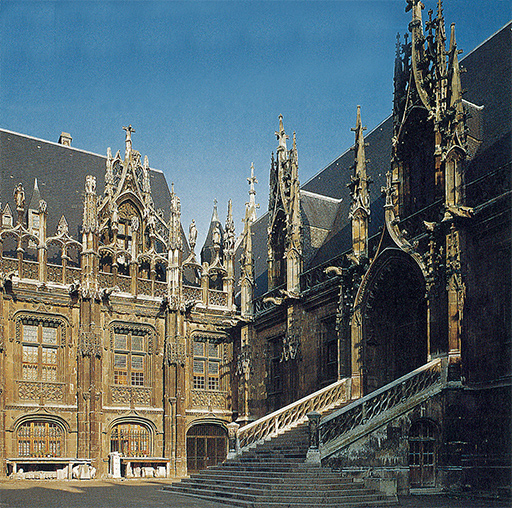
174 Patio del Palacio de Justicia (antigua Tesorería), Ruán, 1482. Estilo gótico flamígero.
Es particularmente en Inglaterra donde podemos observar estas tendencias en la última fase del estilo gótico que se conoce como gótico vertical. Esta denominación fue concebida para expresar el carácter de los edificios de finales del siglo XIV y producidos durante el XV en Inglaterra, en cuya ornamentación las líneas rectas son más frecuentes que las curvas y los arcos de la primitiva tracería del ornamental. El más famoso ejemplo de este estilo es la maravillosa capilla del King’s College en Cambridge (ilustración 175), iniciada en 1446. La forma de esta iglesia es mucho más sencilla que la de los interiores góticos primitivos; no hay naves laterales en ella ni, por consiguiente, pilares o arcos pronunciados. El conjunto produce la impresión de una sala con gran altura de techo más que la de una iglesia medieval. Pero mientras que la estructura general es más sobria y quizá profana que la de las grandes catedrales, la imaginación del artista gótico obtiene absoluta libertad en los detalles, particularmente en la forma de la bóveda (bóveda en abanico), cuyo fantástico entrelazado de curvas y rectas recuerda las maravillas de los antiguos manuscritos (ilustración 103).
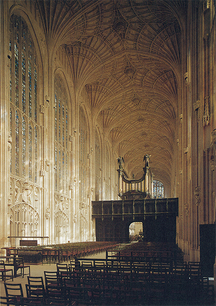
175 Capilla del King’s College, Cambridge, iniciada en 1446. Estilo gótico vertical.
El desarrollo de la pintura y la escultura en los países que no fueran Italia corrió en cierta medida paralelo con el de su arquitectura. En otras palabras, mientras el Renacimiento había triunfado en Italia en toda la línea durante el siglo XV, el norte permaneció fiel todavía a la tradición gótica. A pesar de las grandes innovaciones de los hermanos Van Eyck, la práctica del arte continuó siendo cosa de uso y de costumbre más que de ciencia. Las reglas matemáticas de la perspectiva, los secretos de la anatomía científica, el estudio de los monumentos romanos no turbaron la paz de espíritu de los maestros nórdicos. Por esta razón podemos afirmar que ellos eran todavía artistas medievales, mientras que sus colegas del otro lado de los Alpes pertenecían ya a la era moderna. Pero, sin embargo, los problemas con que se enfrentaban los artistas de ambos lados de los Alpes eran sorprendentemente similares. Jan van Eyck había enseñado a los suyos a convertir el cuadro en un espejo de la naturaleza, sumando cuidadosamente detalle sobre detalle hasta colmar el conjunto mediante paciente observación (ilustraciones 157 y 158). Pero de la misma manera que Fra Angélico y Benozzo Gozzoli, en el sur (ilustraciones 165 y 168), emplearon las innovaciones de Masaccio con el espíritu del siglo XIV, en el norte hubo artistas que aplicaron los descubrimientos de Van Eyck a los temas más tradicionales. El pintor alemán Stefan Lochner (1410?-1451), por ejemplo, que trabajó en Colonia a mediados del siglo XV, fue una especie de Fra Angélico del norte. Su delicioso cuadro de la Virgen en una rosaleda (ilustración 176), rodeada de angelitos que tocan instrumentos musicales, esparcen flores y ofrecen frutos al Cristo niño, revela que el maestro conocía los nuevos métodos de Jan van Eyck, al igual que Fra Angélico conocía los descubrimientos de Masaccio. Y no obstante, su cuadro se halla en espíritu más cerca del Díptico de Wilton del siglo XIV (ilustración 143) que Van Eyck. Puede resultar interesante retroceder al primer ejemplo y comparar las dos obras. Advertimos en seguida que el último maestro ha aprendido algo que presentó dificultades al pintor más antiguo. Lochner podía sugerir el espacio, en el cual, en un trono cubierto de hierbecillas, se hallaba la Virgen. Comparadas con sus figuras, las del Díptico de Wilton parecen un tanto planas. La Virgen de Lochner se destaca todavía sobre un fondo dorado, pero delante de él hay un verdadero escenario. El pintor añadió dos angelitos que mantienen abiertas las cortinas que parecen colgar del marco. Cuadros como éstos, de Lochner y Fra Angélico, fueron los que cautivaron, ante todo, la imaginación de los críticos románticos del siglo XIX, como Ruskin, y de los pintores de la escuela (hermandad) prerrafaelista. Vieron éstos en ellos todo el encanto de la piedad sencilla y de un corazón infantil. En un aspecto tenían razón. Esas obras son tal vez tan encantadoras para nosotros porque, cansados del espacio real en los cuadros, así como del dibujo más o menos correcto, resultan más fáciles de comprender que las obras de los maestros medievales más antiguos, cuyo espíritu, no obstante, se mantiene en ellas.
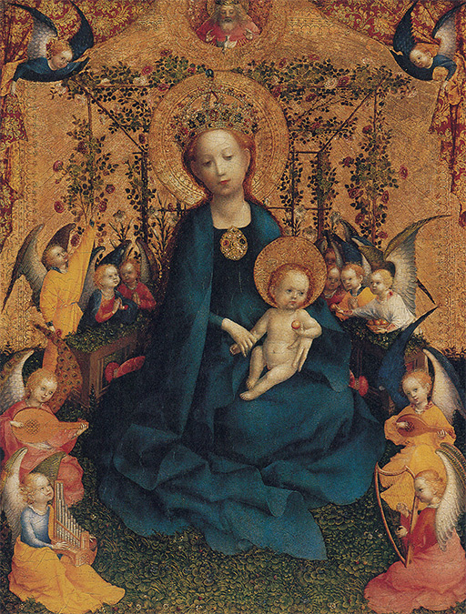
176 Stefan Lochner, La Virgen y el Cristo niño en una rosaleda, h. 1440. Óleo sobre tabla, 51 x 40 cm; Wallraf-Richartz-Museum, Colonia.
Otros pintores del norte se corresponden más bien con Benozzo Gozzoli, cuyos frescos en el Palacio Médicis de Florencia reflejan la alegre fastuosidad del mundo elegante, dentro de un espíritu heredado del estilo internacional. Esto se refiere particularmente a los pintores que diseñaron tapices y a los que decoraron las páginas de preciosos manuscritos. Una de éstas, la de la ilustración 177, fue pintada mediado el siglo XV, como los frescos de Gozzoli. En el fondo se halla la tradicional escena que muestra al autor ofreciendo el libro concluido al noble protector que lo ha encargado. Pero el pintor encontró un tanto anodino este tema; por ello lo situó en una especie de recibidor, mostrándonos todo lo que acontecía en torno. Al otro lado de la puerta de la ciudad hay un grupo que parece dispuesto a salir de caza; al menos uno de los personajes, una especie de petimetre, lleva un halcón en el puño, mientras que los que están alrededor parecen burgueses aparatosos. Vemos los puestos y tenderetes dentro y delante de la puerta de la ciudad, con los mercaderes mostrando sus mercancías y los compradores examinándolas. Es una representación llena de vida de una ciudad medieval de la época. Nada semejante podía haberse hecho un siglo antes o, en realidad, en cualquier otra época anterior. Tenemos que retroceder hasta el arte del antiguo Egipto para encontrar pinturas que reflejen la vida cotidiana de la gente con la fidelidad de ésta; e incluso los egipcios no miraron a su mundo en torno con tanto humor y atención. Es el espíritu del que vimos un ejemplo en el Salterio de la reina María (ilustración 140), que se explayaba en esos encantadores reflejos de la vida cotidiana. El arte nórdico, que se preocupó menos de alcanzar el ideal armónico y la belleza que el arte italiano, favoreció este tipo de representación cada vez en mayor medida.
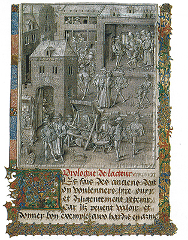
177 Jean le Tavernier. Página de la dedicatoria de Las conquistas de Carlomagno, h. 1460. Biblioteca Real, Bruselas.
No obstante, nada sería más erróneo que imaginar que todas estas escuelas se desarrollaron en compartimentos estancos. Del artista francés situado al frente en este período, Jean Fouquet (1420?-1480?) sabemos, en efecto, que visitó Italia en su juventud. Fue a Roma, donde pintó al Papa en 1447. La ilustración 178 nos muestra el retrato de un donante que realizó, probablemente, pocos años después de su retorno. Al igual que en el Díptico de Wilton (ilustración 143), el santo protege a la figura arrodillada y en oración del donante. Puesto que el nombre de éste era Estienne (en francés antiguo, Esteban), el santo que se halla a su lado es su patrón, san Esteban, que, como primer diácono de la Iglesia, ostenta las vestiduras que le corresponden. Lleva un libro y, sobre él, una gran piedra puntiaguda, pues según la Biblia san Esteban fue lapidado. Si volvemos la vista atrás, al Díptico de Wilton, observaremos otra vez cuán grandes avances hubo realizado el arte, en cuanto a la representación de la naturaleza, en menos de cien años. Los santos y el donante del Díptico de Wilton parece como si hubieran sido recortados en papel y colocados sobre el cuadro. Los de Jean Fouquet parecen modelados. En el cuadro más antiguo no existen rastros de luz ni de sombra. Fouquet hace uso de la luz casi como Piero della Francesca (ilustración 170). El modo en que esas serenas y escultóricas figuras se hallan en un espacio real, muestra que Fouquet quedó profundamente impresionado por lo que vio en Italia. Y sin embargo, su manera de pintar es distinta de la italiana. El interés con que capta las calidades de las cosas —la piel, la piedra, la ropa y el mármol— es evidencia de que su arte sigue siendo deudor de la tradición nórdica de Jan van Eyck.
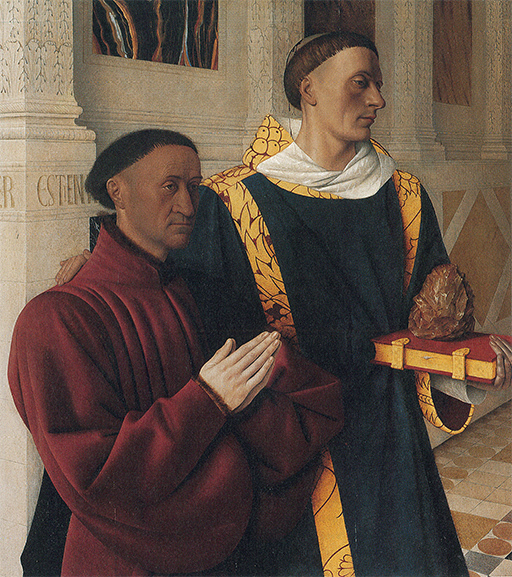
178 Jean Fouquet, EL caballero Estienne, tesorero de Carlos VII de Francia, con san Esteban, h. 1450. Panel de un retablo; óleo sobre tabla, 96 x 88 cm; Galería de Pintura del Museo Nacional, Berlín.
Otro gran artista nórdico que visitó Roma (en una peregrinación de 1450) fue Rogier van der Weyden (1400?-1464). Se sabe muy poco acerca de este maestro, salvo que gozó de gran fama y que vivió en el sur de Holanda, donde también había trabajado Jan van Eyck. La ilustración 179 muestra una gran pintura de altar que representa el descendimiento de la cruz. Vemos que Van der Weyden, como Jan van Eyck, podía reproducir fácilmente cualquier detalle, los cabellos uno a uno, las puntadas una a una. Sin embargo, este cuadro no representa una escena real. El pintor ha situado a sus personajes en una especie de somero escenario contra un fondo neutral. Recordando los problemas de Pollaiuolo (ilustración 171), podremos apreciar la prudencia de la decisión de Van der Weyden. También él tuvo que realizar un cuadro de altar de grandes dimensiones para que fuese visto desde lejos, a la vez que desarrollar el tema sacro ante los fieles de la iglesia. Tenía que resultar preciso en sus siluetas y satisfactorio como esquema. El cuadro de Van der Weyden colma estos requisitos sin parecer forzado y enamorado del virtuosismo, como el de Pollaiuolo. El cuerpo del Cristo, vuelto de cara hacia el espectador, constituye el centro de la composición. Mujeres plañideras lo enmarcan a ambos lados. San Juan, inclinado hacia adelante (también lo está María Magdalena en el lado opuesto), trata en vano de sostener a la desfallecida Virgen, cuyo movimiento corresponde al del cuerpo descendente del Cristo. El sosegado aspecto del anciano forma un verdadero contraste con las actitudes expresivas de los actores principales. Pues, realmente, parecen actores de un misterio sacramental o de un tableau vivant agrupados o colocados por un inspirado director de escena que hubiese estudiado las grandes obras del pasado medieval y desease imitarlas en el seno de su medio peculiar. De este modo, trasladando las ideas principales de la pintura gótica a un estilo nuevo y lleno de vida, Rogier van der Weyden prestó un gran servicio al arte nórdico. Conservó mucho de la tradición del diseño armónico, que de otro modo pudo haberse perdido bajo la influencia de los hallazgos de Jan van Eyck. En adelante, los artistas nórdicos, cada uno a su manera, procurarían reconciliar las nuevas exigencias acerca del arte con los antiguos fines religiosos.
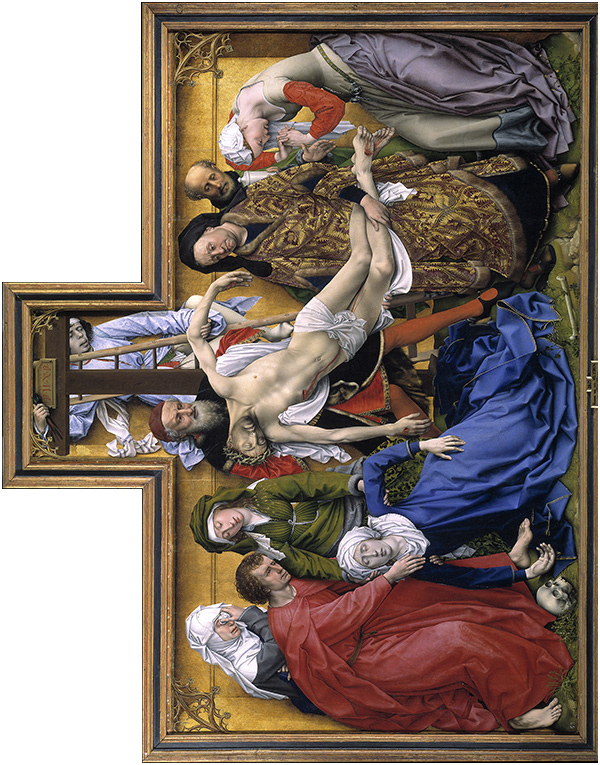
179 Rogier van der Weyden, EL descendimiento de la cruz, h. 1435. Retablo; óleo sobre tabla, 220 x 262 cm; Museo del Prado, Madrid.
Podemos estudiar estos esfuerzos en una obra de uno de los más grandes artistas flamencos de la segunda mitad del siglo XV, el pintor Hugo van der Goes († 1482). Es uno de los pocos maestros nórdicos de este período del que se saben algunos detalles personales. Tenemos noticia de que pasó los últimos años de su vida retirado voluntariamente en un monasterio, en el que estuvo obsesionado por sentimientos de culpabilidad y ataques de melancolía. Ciertamente, hay algo grave e intenso en su arte que le diferencia en gran medida de los plácidos estados de ánimo de Jan van Eyck. La ilustración 180 muestra su cuadro La muerte de la Virgen. Lo que en primer lugar nos sorprende es la manera tan admirable con que ha representado el artista las diversas reacciones de los doce apóstoles ante el acontecimiento que están presenciando, yendo de la expresión serenamente reflexiva a la apasionada de condolencia y hasta la casi indiscreta de ausencia. Podemos medir mejor lo logrado por Van der Goes si retrocedemos a la ilustración de la misma escena sobre el pórtico de la catedral de Estrasburgo (ilustración 129). Comparados con los diversos tipos del pintor, los apóstoles esculpidos parecen mucho más uniformes. ¡Cuán fácil fue para el artista más primitivo situar sus figuras dentro de un diseño preciso! No tuvo que forzarlas con el escorzo y con la ilusión de un espacio, como se esperaba de Van der Goes. Podemos percibir los esfuerzos del pintor para evocar una escena real ante nuestros ojos sin que le quedara alguna parte de la superficie de la tabla vacía y sin sentido. Los dos apóstoles del primer término y la aparición de encima del lecho demuestran claramente cómo se esforzó en distribuir sus personajes y desplegarlos ante nosotros. Pero este esfuerzo visible que hace parecer los movimientos algo contorsionados contribuye también al sentimiento de intensa agitación que rodea a la serena figura de la Virgen, la única que, en la habitación llena de gente, recibe la visión de su hijo abriendo sus brazos para recibirla.
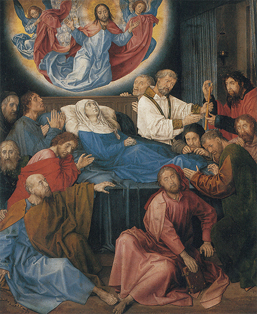
180 Hugo van der Goes, La muerte de la Virgen, h. 1480. Retablo; óleo sobre tabla, 146,7 x 121,1 cm; Groeningemuseum, Brujas.
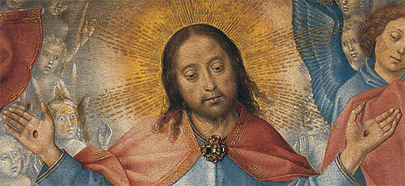
181 Detalle de la ilustración 180.
Para escultores y tallistas, la supervivencia de la tradición gótica en la forma nueva que le otorgó Rogier van der Weyden fue de particular importancia. La ilustración 182 muestra un altar tallado que se encargó para la ciudad polaca de Cracovia en 1477 (dos años después del retablo de Pollaiuolo, ilustración 171). El maestro que lo realizó fue Veit Stoss, quien vivió la mayor parte de su existencia en Nuremberg (Alemania), en donde murió a edad muy avanzada, en 1533. Incluso en la pequeña ilustración podemos observar el valor de un claro diseño, pues, al modo de los fieles de la parroquia situados a cierta distancia, podemos captar fácilmente el sentido de las principales escenas. El grupo central muestra de nuevo la muerte de la Virgen María rodeada de los doce apóstoles, aunque en esta ocasión no está representada yacente sobre el lecho sino arrodillada en oración. Más arriba vemos su alma recibida por el Cristo en el cielo radiante, y en el extremo más alto contemplamos su coronación por el Dios Padre y, otra vez, el Cristo. Las alas del altar representan momentos importantes de la vida de la Virgen, los cuales (junto con su coronación) fueron conocidos con el nombre de los siete gozos de María. El ciclo comienza en el cuadro superior del lado izquierdo con la anunciación; continúa más abajo con el nacimiento y la adoración de los reyes magos. En el ala de la derecha hallamos los otros tres momentos gozosos, tras otros tantos dolores: la resurrección del Cristo, su ascensión y la venida del Espíritu Santo en pentecostés. Los fieles podían contemplar todos estos temas al congregarse en la iglesia en cualquier día festivo dedicado a la Virgen (los otros lados de las alas del retablo correspondían a otros días festivos). Pero únicamente si se situaban muy cerca del altar podían admirar el verismo y la expresividad del arte de Veit Stoss en las maravillosas cabezas y manos de sus apóstoles (ilustración 183).
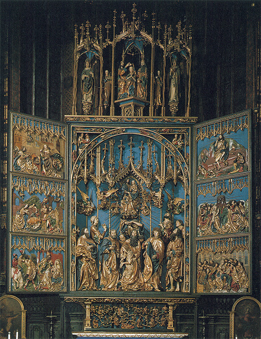
182 Veit Stoss, Altar de la iglesia de Nuestra Señora, Cracovia, 1477-1489. Retablo policromado, 13,1 m de altura.
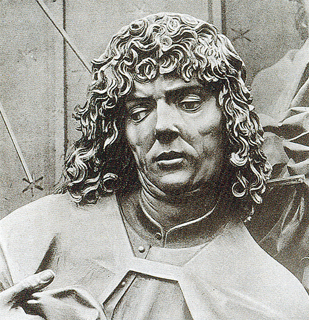
183 Veitt Stoss. Cabeza de un apóstol. Detalle de la ilustración 182.
A mediados del siglo XV tuvo lugar una invención técnica decisiva, que produjo enormes efectos en el futuro desarrollo del arte, y no en éste tan sólo: la imprenta. La impresión de grabados precedió a la de libros en varias décadas. Anteriormente se habían impreso pequeñas hojas con imágenes de santos, acompañadas del texto de las oraciones, para ser repartidas entre los peregrinos y para las devociones privadas. Se trataba del mismo método que se desarrolló más tarde para imprimir las letras. Se tomaba un trozo de madera y con un objeto punzante se extraía todo aquello que no debía aparecer en el grabado. En otras palabras, todo lo que tenía que parecer blanco en el resultado final tenía que ser extraído, y todo lo que tenía que aparecer negro tenía que quedar formando finos salientes. El resultado era semejante al de los sellos de caucho que empleamos hoy, y el principio de imprimir sobre papel era prácticamente el mismo: se cubría la superficie con tinta de imprimir hecha con aceite y negro de humo y se presionaba sobre la página. Podían hacerse gran cantidad de reproducción de cada grabado antes de que éste se gastara. Esta sencilla técnica de reproducción de dibujos se llama grabado en madera o xilografía. Era un procedimiento muy barato y pronto se hizo popular. Varios tacos de madera juntos podían ser usados para pequeñas series de dibujos que se reunían formando un libro; los grabados en madera, así como los libros formados con series de ellos, pronto se pusieron a la venta en las ferias populares. Por el mismo procedimiento se hicieron naipes, dibujos humorísticos y estampas para usos devotos. La ilustración 184 muestra una página de uno de esos primitivos libros de grabados, que fue usado por la Iglesia a la manera de sermón gráfico. Sus miras eran recordar a los fieles la hora de la muerte y enseñarles —como dice el título— El arte de bien morir. El grabado presenta al hombre piadoso en su lecho mortuorio, con un monje a su lado poniéndole una vela encendida en la mano. Un ángel está recibiendo su alma, que le ha salido por la boca en forma de figura orante. En el fondo vemos al Cristo y sus santos, hacia los cuales el moribundo debe dirigir su espíritu. En primer término, vemos un grupo de demonios de las más feas y fantásticas cataduras, y las inscripciones que salen de sus bocas nos comunican lo que están diciendo: «Estoy rabioso», «Estamos deshonrados», «Estoy confundido», «Esto no tiene remedio», «Hemos perdido su alma». Sus grotescas cabriolas son en vano. El hombre que poseyera el arte de bien morir no tenía que temer los poderes del infierno.
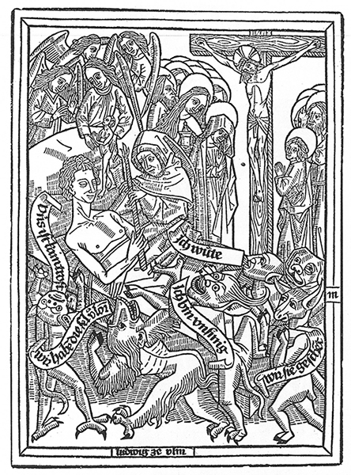
184 El hombre bueno en su lecho de muerte, h. 1470. Grabado en madera, 22,5 x 16,5 cm; ilustración de El arte de bien morir, impreso en Ulm.
Cuando Gutenberg realizó su gran invento de usar letras movibles reunidas en un molde en vez de un conjunto de tacos de madera, los libros compuestos con series de éstos se volvieron obsoletos. Pero pronto se hallaron procedimientos para combinar textos impresos con grabados en madera para ilustrarlos, y muchos libros de la segunda mitad del siglo XV se hicieron así.
Con toda su utilidad, sin embargo, el grabado en madera fue más bien un procedimiento tosco de impresión de dibujos. Es cierto que su propia tosquedad resultaba a veces eficaz. La calidad de estos grabados populares de finales del medievo nos hace recordar a veces nuestros mejores carteles; son sencillos en sus contornos y de poco coste. Pero los grandes artistas de la época tuvieron otras ambiciones. Deseaban demostrar su dominio de los detalles y sus facultades de observación, para lo que no resultaba adecuado el grabado en madera. Por consiguiente, estos maestros eligieron otro medio que produjera efectos más sutiles. En lugar de madera, usaron el cobre. El principio del grabado en cobre es un poco diferente del anterior. En el grabado en madera se debía ahondar todo, excepto las líneas que se deseaba reproducir. En el grabado en cobre se tomaba una herramienta especial, el buril, y se incidía con él en la plancha. La línea que de este modo se practicaba sobre la superficie del metal retendría la tinta de imprimir de cualquier color que sobre ella se volcase. Lo que había que hacer después, por consiguiente, era cubrir la plancha grabada con dicha tinta y a continuación frotar sobre ella hasta dejarla limpia. Presionando después la plancha fuertemente sobre un trozo de papel, la tinta que permaneciese en los surcos abiertos por el buril se exprimiría sobre el papel dejando la estampa acabada. En otras palabras, el grabado en cobre es, en realidad, el negativo del grabado en madera. Este último se realiza dejando que las líneas sobresalgan; el otro, incidiéndolas sobre la lámina de cobre. Ahora bien, pese a lo difícil que pueda resultar el manejo seguro del buril y el dominio de la extensión y la profundidad que deban tener los surcos practicados, una vez que se lo ha logrado está claro que pueden obtenerse más detalles y efectos mucho más sutiles con un grabado en cobre que con otro en madera.
Uno de los más grandes y famosos maestros de grabado del siglo XV fue Martin Schongauer (1453?-1491), que vivió en Colmar, en el alto Rin, la Alsacia actual. La ilustración 185 muestra el grabado La natividad realizado por Schongauer. La escena está representada dentro del espíritu de los grandes maestros holandeses. Al igual que ellos, Schongauer desea expresar los pequeños detalles hogareños de la escena, y hasta hacernos percibir la verdadera contextura y la superficie de los objetos representados por él. Que consiguiera realizarlo sin la ayuda del pincel ni del color, y sin el vehículo del aceite, es algo que roza lo milagroso. Pueden observarse estos grabados a través de una lente de aumento y estudiar su modo de singularizar las piedras y los ladrillos rotos, las flores que nacen en las grietas, la hiedra adherida a lo largo de la bóveda, la piel de los animales y los cabellos y las barbas de los pastores. Pero no solamente debemos admirar su paciencia y su pericia. Podemos saborear su cuento de navidad sin conocer nada de las dificultades del trabajo con el buril. Allí está la Virgen arrodillada en la capilla en ruinas usada como establo. Se postra en adoración al Cristo niño, al cual ha colocado cuidadosamente sobre un extremo de su manto; y san José, con un farol en la mano, la contempla con expresión preocupada y paternal. El buey y el asno se hallan también. Los humildes pastores están llegando al umbral; uno de ellos, en el fondo, recibe el mensaje del ángel. En la esquina superior de la derecha tenemos una visión del coro celestial cantando Paz en la Tierra. En sí, todos estos temas están profundamente enraizados en la tradición del arte cristiano, pero el modo de hallarse combinados y distribuidos en esta página es propio de Schongauer. Los problemas de composición para la página impresa y para el retablo de altar son, en muchos aspectos, semejantes. En ambos casos, la sugerencia del espacio y la fidelidad en la imitación de la realidad no deben originar la destrucción del equilibrio de la composición. Únicamente si reflexionamos sobre este problema podremos apreciar cumplidamente lo conseguido por Schongauer. Ahora comprendemos por qué escogió una ruina como marco: le permitía encuadrar sólidamente la escena con los fragmentos de construcción que forman la abertura a través de la cual podemos mirar; y le permitió asimismo colocar un contraste negro detrás de las figuras principales y no dejar vacía y sin interés ninguna parte del grabado. Podemos observar cuán cuidadosamente proyectó su composición si trazamos dos diagonales sobre la página: se encontrarán en la cabeza de la Virgen, que es el verdadero centro del grabado.
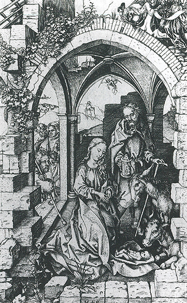
185 Martin Schongauer, La natividad, h. 1470-1473. Grabado en cobre, 25,8 x 17 cm.
El arte del grabado en madera y en cobre se extendió rápidamente por toda Europa. Hay grabados a la manera de Mantegna y Botticelli en Italia, y existen otros a la de Francia y de los Países Bajos. Estos grabados se convirtieron, sin embargo, en otro medio gracias al cual los artistas europeos aprendían unos de otros sus ideas. En aquella época no se consideraba deshonroso tomar una idea o una composición de otro artista, y muchos de los maestros más humildes utilizaban los grabados a modo de modelos que copiar. Del mismo modo que la invención de la imprenta facilitó el intercambio de ideas, sin el cual la Reforma nunca hubiera podido extenderse, así también la impresión de imágenes aseguró el triunfo del arte del Renacimiento italiano en el resto de Europa. Fue una de las fuerzas que pusieron fin al arte medieval del norte, generando una crisis en el arte de esos países que sólo los grandes maestros vencerían.

Jean Colombe (iluminador), Los albañiles y el Rey, h. 1464. De un manuscrito de La historia de Troya; Gabinete de Estampas, Museo Nacional, Berlín.